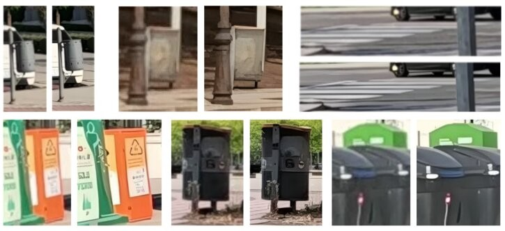
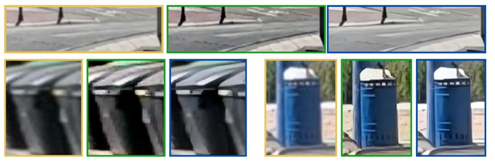

Our 1st Place winning solution (on the private leaderboard) for the ICIP 2025 Grand Challenge, based on data-centric and model-centric enhancements.
In this study, we proposed an enhanced urban object re-identification (ReID) pipeline based on the 'Bag-of-Tricks' (BoT) framework. We introduced a variety of contributions at different levels, including dataset-level enhancements (super-resolution, style transfer, and data augmentation) and architectural enhancements to the BoT baseline.
Urban object ReID (like containers or bins) is a particularly difficult problem. Unlike person ReID, it presents unique challenges:
Our strategy combined data-centric and model-centric enhancements to create a robust pipeline.
A pillar of our success was transforming the input data. On the left (or top) are original images, and on the right (or bottom) are the super-resolved versions.
Here, style transfer is shown: Orange (Original), Green (Style-Transferred), Blue (Super-Resolved).
Our combined solution achieved a +11.75 mAP improvement over the baseline.
ICIP 2025 Grand Challenge
Miguel Díaz Benito, Javier Sequeiro González
My other featured publication focuses on multimodal AI for medical education, which won an honorable mention at MICCAI.